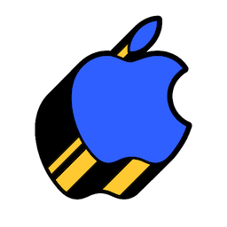

 Mike Gerasymenko — iOS et al.

August 31, 2022
Moving a large project from Cocoapods to Swift Package Manager
What should you know before moving a large project to Swift Package Manager (SPM) from Cocoapods or other dependancy management system for iOS development.

June 20, 2022
Future of iOS: WWDC'22 Special Event
Impressions from visiting Apple's WWDC'2022 special event, part of the WWDC'22 conference, curated for iOS audience.

July 14, 2018
End-to-End encryption for iOS Developer
My talk from UIKonf 2018 on end-to-end encryption and how it works for iOS engineers.

March 01, 2016
Swift custom operators (2016)
My talk and slides about the power of swift custom operators
November 01, 2015
Custom UI styling and animations at Wire
My talk from 2015 about custom UI styling and animations.